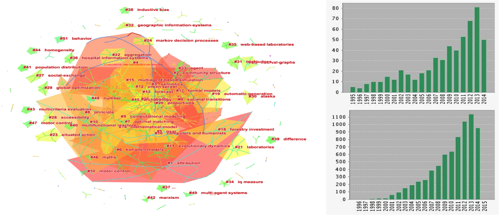
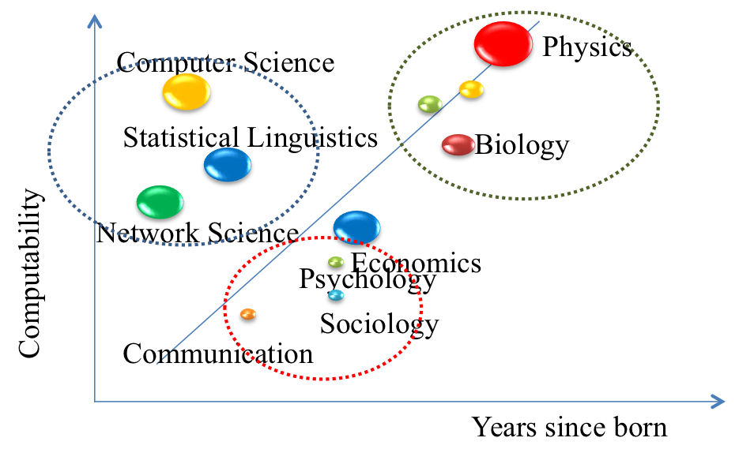
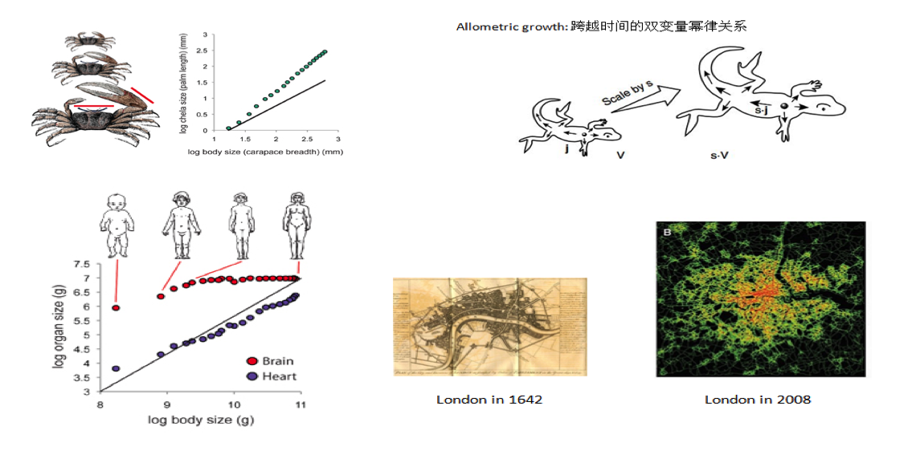
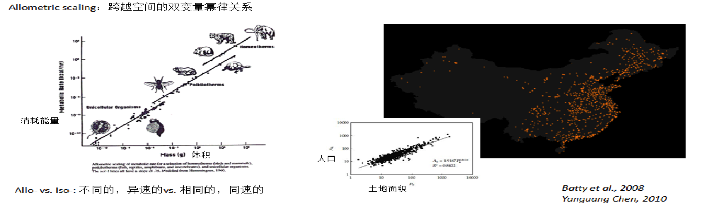
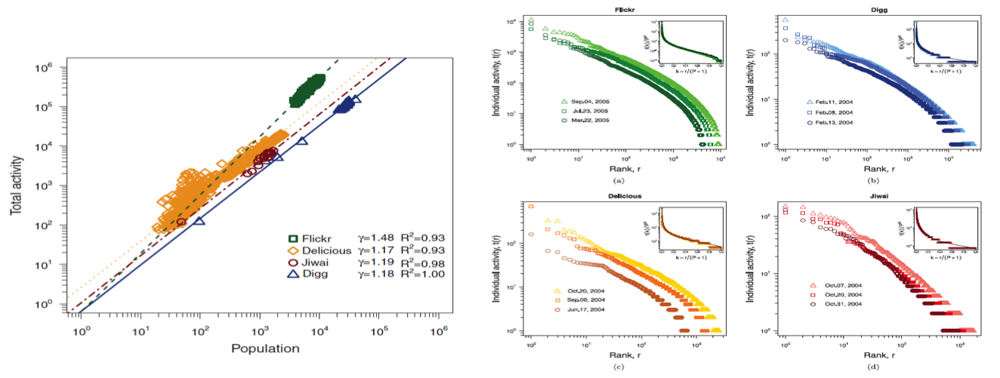
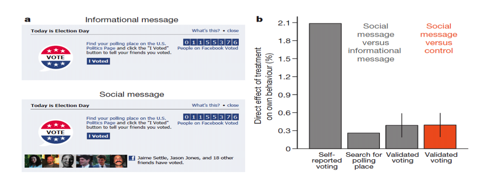
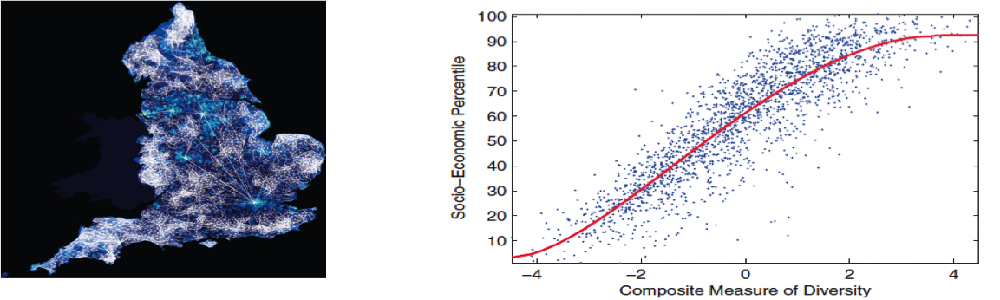
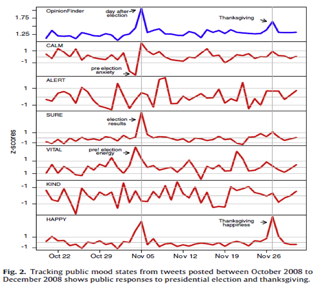
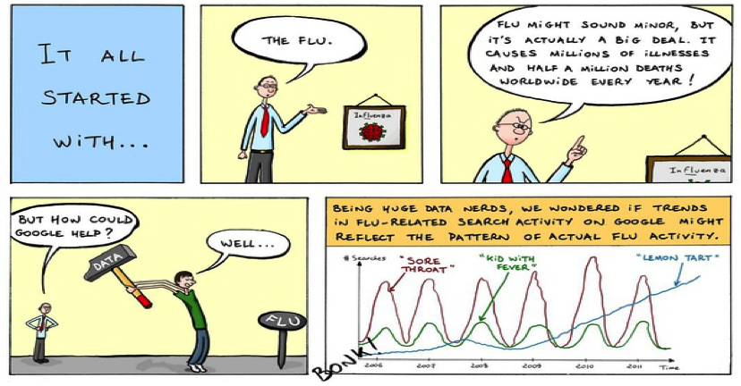
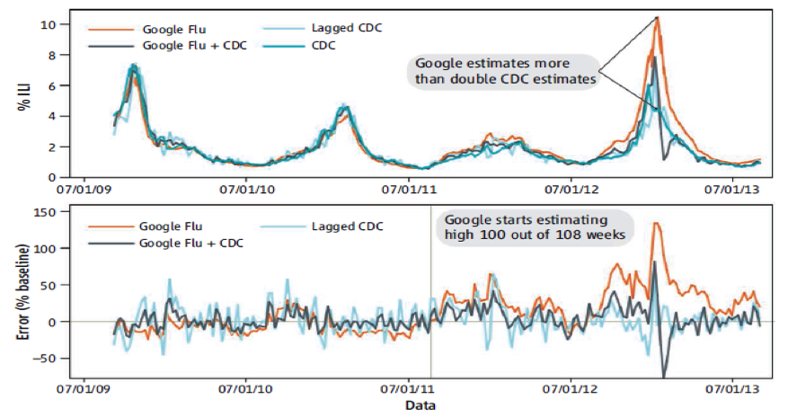

第一章 计算传播学简介¶

“Strong minds discuss ideas, average minds discuss events, weak minds discuss people.” ― Socrates
“大智论道,中智论事,小智论人。” 苏格拉底
一、引言：计算传播¶
计算传播是指数据驱动的、借助于可计算方法所进行的传播过程，而分析计算传播现象的研究领域就是计算传播学(王成军, 2015)。计算传播的应用有很多，例如数据新闻、计算广告、媒体推荐系统等，在过去的几年里，产生了深远的影响。数据新闻风靡全球，重要的国际媒体和国内媒体纷纷采用数据新闻，以开放数据、数据挖掘、可视化的方式提供信息；计算广告备受瞩目，不管是门户网站、搜索引擎，还是社交媒体，纷纷将计算广告当做数据变现的重要渠道，以可计算的方法对广告进行拍卖，实现媒体、内容和用户三方的匹配；媒体推荐系统成为个性化信息获取的重要途径，既包括传统的社交新闻网站，也包括今日头条这种后起之秀，它们纷纷采用协同过滤的方法为用户提供信息，建立了新的信息把关模式。
计算传播作为一种具有重要现实影响的传播行为，它的起源相对较早。例如，网飞公司（Netflix）在九十年代初以邮寄电影光盘作为商业模式，从传播的角度而言，这种商业模式使得用户可以更加自由地选择和观看视频内容，因而具有变革传统媒介消费行为的潜力。对于这个时期的网飞公司而言，很重要的一个问题就是邮寄时间的长短与用户的持续使用行为之间的关系。如果用户对于邮寄时间并不敏感，那么就可以将仓库建在地价低廉的郊区；如果用户对于邮寄时间非常敏感，那么网飞就需要在可承担的范围内将仓库建在距离市区近的地方。而调整仓库的地理位置的决定必须通过计算真实的用户数据才能决定。网飞仅仅是计算传播的一个例子。从更广义的视角来看，搜索引擎的基本社会功能也是计算传播。例如，谷歌的最根本的技术在于其pagerank算法，而这个算法的基本优化目标在于评估每一个网页内容的传播价值，而完成这一目标根本方法就在于计算。反过来经过计算的所得到的搜索结果质量更高，传播效果更好。
驱动计算传播的数据主要来自于人类使用数字媒体时记录下来的数字痕迹（digital traces）。数字媒体使得用户行为可以被详细记载，因而大量地累积了各种用户属性数据和行为数据。例如，当我们通过有线电视观看电视节目的时候、通过手机打电话的时候、通过互联网在网上冲浪的时候、查看微信朋友圈的时候，我们的行为都被电子媒体详细记录下来。数字化的信息不断地改变着传统的传播格局。有线电视服务提供商通过机顶盒获取的用户观看电视的行为对电视节目进行评价，计算不同电视频道在不同时间段的收视率。用户通过网飞网站订观看电影和电视节目的过程中，网飞记录了所有用户的详细数据，除了基本的用户信息、电视剧和电影信息，还包括用户的各种行为数据，例如对视频的订阅、观看、评价、搜索、收藏等。
计算方法使得沉睡的数据宝藏开始觉醒。随着计算技术的发展，人类计算能力不断提高，可以分析和挖掘的数据规模不断扩大。统计、机器学习、自然语言处理等数据挖掘技术更广泛地应用到计算传播的过程当中。仍然以网飞为例，基于所积累的丰富数据，网飞建立了高效的推荐系统。为了更有效地提高其推荐系统的推荐效果，网飞举办了两次轰动全球的百万大奖比赛。来自全世界160多个国家的参赛者采用机器学习的方法对网飞的用户数据进行分析，经过三年时间成功地解决了一个巨大挑战：为已有评级的网飞用户预测其对新影片的喜好。计算技术的提高有时候需要深入到模型的高度。例如，谷歌放弃了将一个个网页看作是孤岛的思维方式，转而将这些网页看做网络当中的节点，节点之间由超链接（hyperlink）连接起来。pagerank算法其实质是一个崭新的网络模型。搜索引擎将全世界的网页构成的庞大网络作为数据。毫无疑问这种数据规模是非常大的，对这些数据进行计算所需要的计算量也是非常大的。但是与数据量和计算量相比，谷歌的例子告诉我们建立一个高效的模型更加重要。
计算传播作为一个崭新的研究领域，需要研究者投入更多的注意力。分析计算传播应用、从传播学的角度研究计算传播的实际问题具有不可忽略的意义，反过来讲，分析和总结计算传播学的研究方式，对于传播学自身的发展而言也具有重要意义。本章将对计算传播的概念、特点和应用进行了简单介绍。
二、作为计算社会科学的计算传播学¶
虽然计算传播应用早已存在，但是作为一个概念，计算传播和计算传播学的提出主要源于计算社会科学的发展。直到计算社会科学成为研究热点之后，计算传播作为一个概念才正式被提出(王成军, 2015; 祝建华 et al., 2014)。2009年，社会科学研究者David Lazer、Alex Pentland、Sinan Aral、Nicholas Christakis、Noshir Contractor、James Fowler、Myron Gutmann、Devon Brewer等人与作为计算机科学家的Lada Adamic以及作为网络科学研究者的Albert Barabasi在《科学》杂志上发表了一篇题为“计算社会科学”的论文，开启了计算社会科学的研究热潮(Lazer, Pentland, Adamic, & Aral, 2009)。Lazer等人指出随着用于研究的数据不断增多以及人类的计算能力不断增强，采用计算作为研究手段的社会科学已经形成，尤其需要强调的是这个研究领域的一个主要特点是采用网络科学的研究方法分析社会科学的研究问题。
无独有偶，在Lazer等人2009年发表这篇文章之前，网络科学的另外一个主要研究者Duncan Watts于2007年就在《自然》杂志上发表题为“二十一世纪的科学”一文(Watts, 2007)。Watts认为社会科学是二十一世纪最重要的科学。我们现代社会所面临的绝大多数问题是社会科学问题。社会科学研究者之所以没有发展出类似物理学和生命科学一样完善的理论框架是因为社会科学研究是最难的。社会现象卷入了海量的异质性的个体的相互互动，以致于变得非常复杂。幸运的是网络科学的研究开启了一个新的研究方向，但是网络科学需要大量的实证数据，而基于互联网的传播恰好提供了新的两种新的研究方式：一是各种各样的“数字足迹”（网络聊天、发博客、发微博、加标签、发邮件等），另外一个是互联网实验。基于以上理由，Watts提出“如果处理得当，基于互联网传播产生的数据和互动性将会变革我们对于人类集体行为的认识”(Watts, 2007)。
计算社会科学¶
Lazer et al (2009) Compuational social science. Science. V323. 6 Feb 2009
计算社会科学正在涌现
大规模的数据收集和数据分析
网络科学视角
揭示个体和群体行为的模式
D. Watts, A twenty-first century science. Nature 445, 489 (2007).
互联网大数据
网络科学视角
产生背景
网络科学（network science）
计算语言学 （computational linguistics）
数据科学（data science）
社会计算 （social computing）
普适计算（ubiquitous computing）
可视化 （visualization）
数据新闻学 (data journalism)
计算广告学 (computational advising)
如何认识计算社会科学？¶
根据对于计算社会科学一词的引文网络分析，研究者发现计算社会科学方兴未艾、处于指数增长的阶段(王成军, 2015)。自从Lazer等人2009年发表其重要论文之后，计算社会科学类的论文数量和应用数量不断增长，且大多数论文发表在《科学》、《自然》等综合性期刊以及各个学科最好的期刊上。从引文网络的结构而言，计算社会科学研究已经形成了一个紧密的研究领域。
计算社会科学社区的发展
{kind=link}
王成军（2015）计算传播学:作为计算社会科学的传播学.《中国网络传播研究》8.193-208
{kind=link}
{kind=link}
计算社会科学是科学吗？¶
Geology is not a real science
Sheldon from the big bang theory
http://www.youtube.com/watch?v=sYMFHON8LFw
三、如何认识世界？¶
洞穴之喻
开放思维
康德：“我们所有的知识起源于感知，然后发展为理解，终结为理性。没有比理性更高的东西。”
Immanuel Kant: All our knowledge begins with the senses, proceeds then to the understanding, and ends with reason. There is nothing higher than reason.
Paul Erdos: My brain is open.
Follow your logic
常识?¶
Everything is obvious: Once your know the answer
Duncan J. Watts:
当我们谈到社会科学时候，我们总觉得任何事情都是明显的，似乎采用常识（common sense）就可以回答绝大多数问题。
硬科学与软科学
Lazarsfeld, Paul F. 1949. “The American Soldier—An Expository Review.”Public Opinion Quarterly 13 (3):377—404.
美国士兵研究起源于二战，美国陆军部对参战的60万士兵进行了调查，毫无疑问这一定花费了很多纳税人的钱。拉杂斯菲尔德“声称”他们发现来自农村的士兵更快乐。这是为什么呢？
事实上，拉杂斯菲尔德告诉读者，他们的发现恰好与之相反：来自城市的士兵更快乐！ 这又是为什么呢？
所以这个发现也是显而易见的！于是问题就来了：当每个答案以及与它们的对立的答案从常识的角度都看上去如此明显，那么我们对于“显而易见”（obviousness)的理解肯定出了问题。
理论的三个比喻¶
理论即逻辑的组合。
网络、望远镜、地图
{kind=link}
理论是一棵树¶

引力研究为例¶
托勒密：地球处于宇宙中心
引力第一重境界
哥白尼、弟谷
引力第二重境界
开普勒
引力第三重境界
牛顿
引力的第四重境界
爱因斯坦
Richard Feynman, which is titled The Character of Physical Law – Part 1 The Law of Gravitation http://v.youku.com/v_show/id_XNzc4Mjk1NjA=.html
开普勒定律
①椭圆定律所有行星绕太阳的轨道都是椭圆，太阳在椭圆的一个焦点上。
②面积定律行星和太阳的连线在相等的时间间隔内扫过相等的面积。
③调和定律所有行星绕太阳一周的恒星时间T的平方与它们轨道长半轴A的立方成比例
牛顿运动定律
由艾萨克·牛顿在1687年于《自然哲学的数学原理》一书中总结提出。
第一定律说明了力的含义：力是改变物体运动状态的原因；
第二定律指出了力的作用效果：力使物体获得加速度；
第三定律揭示出力的本质：力是物体间的相互作用。[2]
伽利略的相对性原理
一切彼此做匀速直线运动的惯性系，对于描写机械运动的力学规律来说是完全等价的。并不存在一个比其它惯性系更为优越的惯性系。
在一个惯性系内部所作的任何力学实验都不能够确定这一惯性系本身是在静止状态，还是在作匀速直线运动。
等待牛顿
太阳系行星的椭圆轨道
彗星的抛物线轨道
地球上的抛物线运动
传播学在哪里？
Claude Shannon
Paul Felix Lazarsfeld
Kurt Zadek Lewin
Harold Dwight Lasswell
Carl Iver Hovland
Everett Rogers
Maxwell McCombs
Elihu Katz
Elisabeth Noelle-Neumann
Jürgen Habermas
George Gerbner
Wilbur Lang Schramm
Walter Lippmann
Herbert Marshall McLuhan
Theodor W. Adorno
四、可计算性¶
关注事物本身可以被计算的程度
Computability is the ability to solve a problem in an effective manner。 The computability of a problem is closely linked to the existence of an algorithm to solve the problem.
算法的可计算函数
图灵停机：你能用编程语言写出来并运行的都是可计算函数
可计算化(Computational)¶
关注事物本身可以被计算的方式
计算思维（computational thinking）
问题抽象、任务的分解、自动化实现。
Analyzing and logically organizing data
Data modeling, data abstractions, and simulations
Formulating problems such that computers may assist
Identifying, testing, and implementing possible solutions
Automating solutions via algorithmic thinking
Generalizing and applying this process to other problems
传播学可计算化的基础存在吗？是什么？
可计算性与科学研究
{kind=link}
一直以来，计算方法同社会科学的结合是通过计算机模拟（多主体建模）进行的(Axelrod, 1997; Gilbert, 2008; Gilbert & Troitzsch, 2005)，网络科学出现之后，因其与真实的人类行为数据的紧密结合而成为更为重要的研究范式。社会系统如同生物系统、金融系统等一样是一个复杂系统，社会现象充满了复杂性，因而需要采用复杂性科学的研究视角进行分析(Mitchell, 2011)。正因为人们总是生活在各种网络当中，而且网络恰好为各种复杂的社会现象的结构提供了一个数学表达，因而采用网络科学的视角对于分析社会现象具有重要意义，也是基于这个原因，计算社会科学现阶段最主要的研究主要是基于网络科学展开的(王成军, 2015)。
他山之石：网络科学
We live life in the network
Lazer et al (2009) Compuational social science. Science. V323. 6 Feb 2009
Complex networks have been studied extensively owing to their relevance to many real systems such as the world-wide web, the Internet, energy landscapes and biological and social networks. Song et al (2005)
Network science supplies a mathematical structure of the social phenomenon.
五、定义计算传播学¶
计算传播是指数据驱动的、借助于可计算方法所进行的传播过程，而分析计算传播现象的研究领域就是计算传播学(王成军, 2015)。一方面，计算传播学的提出是计算传播产业发展的自然结果；另一方面，计算传播学（computational communication research）是计算社会科学（computational social science）浪潮当中的一个重要分支。
主要关注人类传播行为的可计算性基础。
以传播网络分析、传播文本挖掘、数学建模等为主要分析工具
（以非介入地方式）大规模地收集并分析人类传播行为数据
挖掘人类传播行为背后的模式和法则
分析模式背后的生成机制与基本原理
可以被广泛地应用于数据新闻、计算广告、媒体推荐系统等计算传播产业场景
注重编程训练、数学建模、可计算思维
当人类传播行为的数据构成了计算社会科学的重要基础的时候，深入认识计算传播学的时机终于到来。祝建华等人总结了计算社会科学在传播学的各种应用(祝建华 et al., 2014)，王成军(2015)系统回顾了计算社会科学发展，并给出了计算传播学的定义：“计算传播学是计算社会科学的重要分支。它主要关注人类传播行为的可计算性基础,以传播网络分析、传播文本挖掘、数据科学等为主要分析工具,(以非介入的方式)大规模地收集并分析人类传播行为数据,挖掘人类传播行为背后的模式和法则,分析模式背后的生成机制与基本原理,可以被广泛地应用于数据新闻和计算广告等场景”。在此基础上2015年，第一本计算传播学相关的图书《社交网络上的计算传播学》出版(许小可, 胡海波, 张伦, & 王成军, 2015)。
计算传播社区
计算传播网 http://computational-communication.com/
计算传播学豆瓣小组 https://www.douban.com/group/webmining/
计算传播学邮件组 https://groups.google.com/group/computational-communication
Meme背后的社区
Meme为什么能持续流行？
社区驱动 + 解决问题
Big data和machine learning：互联网公司
特征工程
Open science： 学术期刊、学会和大学
出版流程
Data journalism：媒体、新闻从业者、程序员
可视化需求
Network science：网络研究者、社交网站
复杂网络研究
我们的愿景
寻找人类传播行为可计算化的基因。
基因是生物学飞跃的原因，货币是经济学发展的关键。人类传播行为所隐藏的计算化“基因”是什么？
计算传播学致力于寻找传播学可计算化的基因、学习和传播可计算化思维/方法（电子化数据收集能力、编程能力、数学建模能力、网络分析、文本挖掘）、了解和训练计算传播学的社会化应用方法（数据新闻、计算广告、可视化等）。
六、通往计算传播学之路¶
方法：从数据到模型
开放数据 (open data)
实证数据
工具
开源（open source）
R和Python
开放科学（open science）
数值模拟
多主体建模
分析模型
计算模型
书籍
Big Data
Doing data scienceBeginning Python
Networks, crowds, and Markets
大数据：数字化“指纹”
Behavioral Data
Relational Data
Longitudinal
Big Data
Digital Data
D. Watts, A twenty-first century science. Nature 445, 489 (2007).
If handled appropriately, data about Internet-based communication and interactivity could revolutionize our understanding of collective human behaviour.
很少有人会认为社会科学会成为21世纪科学的中心
因为社会现象是最难解决的科学问题之一
社会现象当中卷入了海量的异质性的个体之间的互动
网站记录（Website Logs）与基于互联网的实验（Web-based experiments） - 互联网公司与研究者的合作
学科基础
物理学
数学
计算机科学
数据科学
计算语言学
网络科学
模式或法则：异速增长定律¶
{kind=link}
http://www.nature.com/scitable/knowledge/library/allometry-the-study-of-biological-scaling-13228439
 {kind=link}
Wu & Zhang (2011) Accelerating growth and size-dependent distribution of human online activities. PhysRevE.84.026113
社会科学家开始大量地使用社会网络数据进行科学研究(Miller, 2011)，例如Bollen等人采用推特的数据进行情感分析，发现“冷静”这一种情绪可以较好地预测股票的涨落(Bollen, Mao, & Zeng, 2011)。Ginsberg等人采用谷歌的搜索数据分析了人们检索与流感相关的词语的时间序列，通过机器学习的方式预测人类大规模流感的爆发，可以使人们提前两周预知流感的爆发(Ginsberg et al., 2009)。
Eagle等人采用英国的手机数据构建的传播网络，研究发现城市节点在传播网络的多样性与城市社会经济发展指数之间具有非常好的正相关的函数关系，由此可能证明传播行为对于经济发展的重要性(Eagle, Macy, & Claxton, 2010)。 Bond等人使用Facebook作为网络实验平台研究美国大选，liu’bai’wan六百多万人参与了实验，结果证明社交网路传递的信息的影响力远大于信息的直接传播，强关系对于人类社会网络里的行为传播具有重要意义(Bond et al., 2012)。
在线社交网络¶
选举行为可以通过社交网络传染
{kind=link}
Robert M. Bond et al. A 61-million-person experiment in social influence and political mobilization. Nature. 2012
手机通话网络¶
传播的多样性制约社会经济的发展?
{kind=link}
Nathan Eagle, Michael Macy and Rob Claxton: Network Diversity and Economic Development, Science 328, 1029–1031, 2010.
{kind=link}
预测股票市场？¶
Emotion: Calm\Alert\Sure\Vital\Kind\Happy
{kind=link}
Bollen (2011) Twitter mood predicts the stock market. JOCS
{kind=link}
Google Flu Trends¶
使用搜索引擎预测流感
{kind=link}
Ginsberg et al. Detecting influenza epidemics using search engine query data. Nature 457, 1012-1014 (19 February 2009)
http://www.google.com/trends/correlate/comic
{kind=link}
“Nature reported that Google flu trends (GFT) was predicting more than double the proportion of doctor visits for influenza-like illness (ILI) than the Centers for Disease Control and Prevention (CDC), which bases its estimates on surveillance reports from laboratories across the United States (1, 2).”
Lazer et al. (2014) The parable of Google Flu Traps in big data analysis. Science
理论的最高标准¶
Per Bak:“It puzzles me that geophysicists show little interest in underlying principles of their science. Perhaps they take it for granted that the earth is so complicated and messy that no general principles apply”.
How Nature Works?
Hack定律¶
Hack定律指出，在河流网络中，支流的长度（stream length）L和相对应的蓄水盆地面积（basin area）A之间存在如下标度关系：\(L = A^h\)
其中h的数值在大多数水系的实证数据中都被测为0.6左右。
计算传播学作为一个研究领域，更加重视对于数据本身的使用，但是需要强调的是数据只是起点。通过数据挖掘，发现人类传播行为的模式才更有意义。从数据到模式的跨越，衡量了计算传播学研究的发展阶段。在缺乏数据的时候，研究者无法证明模式的存在。开普勒只有在第谷收集的大量的天文数据的基础上才能做出天体运行模式的三大发现。网络科学家也只有在掌握了大规模的网络数据的时候才能发现并证明幂律在网络中的普遍存在(Barabási & Albert, 1999)。在新闻地图项目研究当中，只有当我们系统的分析了各个省市新闻影响力的不同计算指标之后，才能发现它们之间的幂律关系，尤其是新闻数量与新闻引用之间所存在的超线性增长模式。
但是，需要警惕的是仅仅停留在模式层面上是不足的，只有能够在机制上对模式的出现提供有效的解释才能将研究变得更加有价值。同样以网络科学分析网络中的无标度现象作为例子，研究者在电力输运网络、演员网络、互联网三个数据当中均发现了度分布的无标度模式，这表明在这种模式背后必然隐藏着更为深刻的机制。Barabási & Albert(1999)认为网络增长和优先链接两种机制是构成无标度模式普遍存在的关键原因。基于这两种机制，他们构造了BA网络，并采用平均场的方法证明了其有效性。通过机制，我们可以得到现实数据中所隐藏的模式。在新闻地图研究项目中，我们得到了三种新闻影响力的幂律模式，也推理得到了一个可能的机制，即新闻影响力的扩大是通过新闻引用来实现的，但还没有提供一个有效性的证明，这成为下一步研究的重点。当计算传播学研究从发现模式的阶段上升到提出机制的阶段，标志着这个研究领域的开始走向成熟。
Before God we are all equally wise and equally foolish. Do not worry about your difficulties in Mathematics. I can assure you mine are still greater. ——Albert Einstein
不管时代的潮流和社会的风尚怎样，人总可以凭着自己高尚的品质，超脱时代和社会，走自己正确的道路。现在，大家都为了电冰箱、汽车、房子而奔波、追逐、竞争。这就是我们这个时代的特征了。但是也还有不少人，他们不追求这些物质的东西，他们追求理想和真理，得到了内心的自由和安宁。 —- 爱因斯坦
阅读文献¶
Adam Mann (2016) Core Concepts: Computational social science. 113: 468–470, doi: 10.1073/pnas.1524881113 http://www.pnas.org/content/113/3/468.full
Watts, D. J. (2007). A twenty-first century science. Nature, 445(7127), 489-489.
Lazer, D., Pentland, A. S., Adamic, L., Aral, S., Barabasi, A. L., Brewer, D., … & Van Alstyne, M. (2009). Computational social science. Science (New York, NY), 323(5915), 721. ↩
Cioffi‐Revilla, C. (2010). Computational social science. Wiley Interdisciplinary Reviews: Computational Statistics, 2(3), 259-271.
Strohmaier, M., & Wagner, C. (2014). Computational Social Science for the World Wide Web. IEEE Intelligent Systems, (5), 84-88. ↩
Conte, Rosaria, Nigel Gilbert, Guilia Bonelli, Claudio Cioffi-Revilla, Guillaume Deffuant, Janos Kertesz, Vittorio Loreto et al. “Manifesto of computational social science.” The European Physical Journal Special Topics 214, no. 1 (2012): 325-346.
Watts, D. J. (2007). A twenty-first century science. Nature, 445(7127), 489-489.
Duncan J. Watts 2011 Everything Is Obvious：Once You Know the Answer. Crown Business. 2011-3-29
Axelrod, R. M. (1997). The complexity of cooperation: Agent-based models of competition and collaboration: Princeton University Press.
Bollen, J., Mao, H., & Zeng, X. (2011). Twitter mood predicts the stock market. Journal of Computational Science, 2(1), 1-8.
Bond, R. M., Fariss, C. J., Jones, J. J., Kramer, A. D., Marlow, C., Settle, J. E., & Fowler, J. H. (2012). A 61-million-person experiment in social influence and political mobilization. nature, 489(7415), 295-298.
Eagle, N., Macy, M., & Claxton, R. (2010). Network Diversity and Economic Development. Science, 328, 1029–1031.
Gilbert, N. (2008). Agent-based models: Sage.
Gilbert, N., & Troitzsch, K. (2005). Simulation for the social scientist: McGraw-Hill International.
Ginsberg, J., Mohebbi, M. H., Patel, R. S., Brammer, L., Smolinski, M. S., & Brilliant, L. (2009). Detecting influenza epidemics using search engine query data. nature, 457(7232), 1012-1014.
Goldstein, J. S. (1992). A Conflict-Cooperation Scale for WEIS Events Data. Journal of Conflict Resolution, 36(2), 369-385.
Miller, G. (2011). Social scientists wade into the tweet stream. Science, 333(6051), 1814-1815.
Mitchell, M. (2011). Complexity: A Guided Tour. New York: Oxford University Press.
刘磊, 朱静怡, 王成军, & 陈志聪 (Producer). (2015). 读者可以浏览《各省市新闻动态变化图》的在线互动版本. Retrieved from http://ccc.nju.edu.cn/newsmap/link3.html
沈浩, 杨璇, & 杨一冰. (2014). 传播学研究新思路：复杂网络与社会计算. 科研信息化技术与应用, 5(2), 27-33.
王成军. (2015). 计算传播学:作为计算社会科学的传播学. 中国网络传播研究, 8, 193-208.
王成军 (Producer). (2016). 读者可以浏览《2015年全球新闻人物网络》的互动版本. Retrieved from http://data-science-lab.github.io/gdelt/index.html
祝建华, 彭泰权, 梁海, 王成军, 秦洁, & 陈鹤鑫. (2014). 计算社会科学在新闻传播研究中的应用. 科研信息化技术与应用, 5(2), 3-13.
许小可, 胡海波, 张伦, & 王成军. (2015). 社交网络上的计算传播学. 北京: 中国科学出版社.